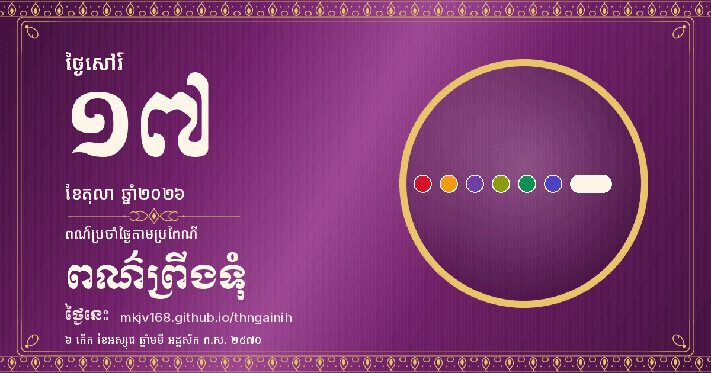

Saturday, 17 October 2026ថ្ងៃសៅរ៍ ទី១៧ ខែតុលា ឆ្នាំ២០២៦
៦ កើត ខែអស្សុជ ឆ្នាំមមី អដ្ឋស័ក ព.ស. ២៥៧០
6th waxing day of Assoch · Year of the Horse · B.E. 2570
Traditional weekday colour: Dark purple (plum); some sources: black, indigo or dark brown
ពណ៌ប្រចាំថ្ងៃតាមប្រពៃណី: ពណ៌ព្រីងទុំ (ប្រភពខ្លះ៖ ខ្មៅ និល ឬត្នោតចាស់)
Next public holiday: King Norodom Sihamoni's Coronation Day in 12 days (2026-10-29)
ថ្ងៃឈប់សម្រាកបន្ទាប់៖ ទិវាគ្រងរាជ្យសម្បត្តិ នៅសល់ ១២ ថ្ងៃ (២០២៦-១០-២៩)
Sub-Decree 167/198 ANKr.BK